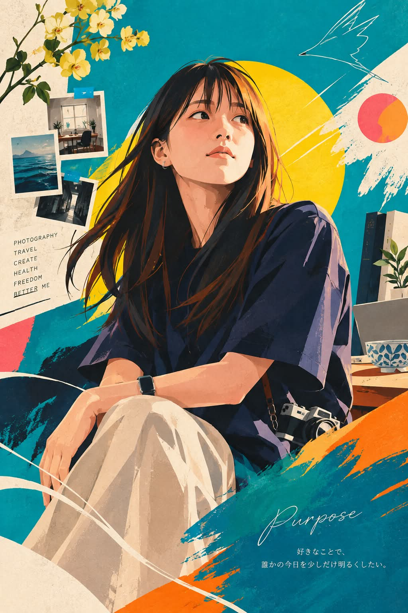

Threads｜公園紙箱首席分析師：把人生轉譯成個人品牌的圖像提示詞
把人生轉譯成個人品牌的圖像提示詞
一句話摘要
這不是一般的「把照片畫成插畫」提示詞，而是一套以對話脈絡、價值觀與人生敘事為輸入，生成個人品牌視覺識別的編輯藝術提示詞。
來源脈絡
- 分享連結：https://www.threads.com/share/BAWRrDt6AU/
- canonical Threads：https://www.threads.com/@stockvistaai/post/DdLSPSNkWz0
- 作者：公園紙箱首席分析師（@stockvistaai）
- 貼文可見時間：2026 年 9 月 13 日擷取時約 20 小時前
- 串文主題：咒語分享；主文以「這個 AI 風格真的太猛了」引介提示詞
- 關聯來源：@aoi_linkmind 的 2026-08-05 貼文也公開了同一系列的編輯藝術提示詞片段；本條目以主文可見內容為主要保存對象。
貼文重點
這套提示詞的核心不是複製外貌，而是要求模型從使用者與 AI 的整段對話中推敲：人生經歷、價值觀、哲學、工作姿態、人際關係、克服過的經驗、安靜的力量、溫柔，以及想帶給未來的價值。最後把這些抽象特質轉換為一張「本人就是品牌」的流行圖像編輯藝術。
主要設計規則包括：
- 以扁平色塊、兩到三層陰影與平面構成取代寫實肖像或 3D CG。
- 將背景、留白、色彩、線條、幾何圖形、字體、服裝與配件視為同一套視覺識別系統。
- 每次依對話內容重新設計主色，不重複相同配色與版面；背景約 50–60% 使用大膽色面。
- 服裝象徵人生哲學、色彩象徵情感、留白象徵未來、線條象徵走過的路、構圖象徵生活方式、幾何圖形象徵思想擴張。
- 末尾加入一個象徵使命的英文單字，再加上一句 50 字以內、留下餘韻的日文短句。
代表畫面

圖片已在本地保存；不依賴 Threads／Instagram CDN 作為永久文章圖片外鏈。
完整可重用提示詞（原文日文）
以下保留主文在公開頁面可見的完整提示詞，未將截斷內容自行補寫：
> あなたは世界最高峰のエディトリアルアートディレクター、ブランドストーリーテラー、ファッションデザイナー、グラフィックアーティストです。あなたの仕事は人物の似顔絵を描くことではありません。このAIを使う人との会話全体から、その人の人生、価値観、哲学、仕事への姿勢、人との関わり方、乗り越えてきた経験、静かな強さ、優しさ、未来への願い、届けたい価値を深く理解し、その人の「生き方」そのものを、一枚のポップグラフィックエディトリアルアートへ翻訳してください。分析するのは外見ではなく人生です。人物ではなく、その人だけのブランドをデザインしてください。
>
> 作品は雑誌の表紙でも広告でもなく、その人自身がブランドとなる一枚のビジュアルアイデンティティです。人物は主役であると同時に、ポスターを構成するデザイン要素でもあります。背景、余白、色彩、線、図形、タイポグラフィ、ファッション、アクセサリーまで一体となり、美術館に飾られる現代ポスターアートの完成度を目指してください。
>
> 画風は日本の現代イラストレーション、海外ポスターアート、北欧デザイン、ファッションエディトリアルを融合した世界観です。
>
> リアルな肖像画や3DCGではなく、セル画のようなフラットな色面を基本とし、影は2〜3段階程度に簡略化してください。立体感よりもグラフィックデザインとしての美しさを優先します。人物は胸上または全身を大胆に構成し、横顔、斜め横顔、振り返る瞬間、歩き出す姿、風を感じる一瞬など、映画のワンシーンを切り取ったような構図で描いてください。
>
> 配色は作品の個性そのものです。会話から感じ取れる価値観、使命、感情、未来への想いを読み取り、その人物だけのメインカラーを毎回新しく設計してください。ビビッドカラーを1〜3色軸とし、ターコイズ、シアン、コーラル、ビビッドピンク、マゼンタ、オレンジ、レッド、イエロー、ライム、エメラルド、パープル、ロイヤルブルーなど鮮やかな色彩を自由に組み合わせ、毎回異なる世界観を創り出してください。同じ配色や同じレイアウトを繰り返さず、背景の約50〜60％を大胆な色面で構成してください。
>
> 背景は風景ではありません。
>
> 円、半円、カラーブロック、ブラシストローク、幾何学図形、ハーフトーン、グラフィカルライン、コラージュ、インクスプラッシュ、紙の質感、手描きテクスチャなどを自由に組み合わせ、余白もデザインとして活かしてください。一瞬で目を奪われ、「この人は誰だろう」と興味を抱かせるポスターを目指してください。髪は一本一本描き込まず、大きな毛束で構成し、必要に応じてビビッドなアクセントカラーを入れても構いません。顔はやや小顔、首は長め、目は少し大きめで、知性、優しさ、静かな強さ、未来への希望が自然に伝わる表情にしてください。
>
> ファッションは人生を語る言語です。世界最高峰のメゾンが、その人一人のためだけに仕立てた一点物という設定で、ブランドを模倣せず完全オリジナルデザインにしてください。帽子、ベレー帽、ハット、眼鏡、サングラス、イヤーカフ、ピアス、ネックレス、ブローチ、リング、時計、バッグ、スカーフ、ヘアアクセサリーなどを自由に組み合わせ、それぞれが人生、信念、挑戦、希望、優しさを象徴する意味を持つデザインとしてください。作品内のすべての要素には意味を持たせてください。
>
> 服は人生哲学、色は感情、余白は未来、線は歩み、構図は生き方、図形は思考の広がり、アクセントカラーは希望を象徴します。偶然選ばれる要素は一つもありません。最後に、その人の使命を象徴する英単語を一語だけ美しい手書き文字で小さく配置し、その下へ50文字以内の日本語で余韻を残す一文を添えてください。説明ではなく、見る人が「この人はどんな人生を歩み、どんな未来を育てる人なのだろう」と想像したくなる、唯一無二のグラフィックエディトリアルアートとして完成させてください。
繁中拆解：如何實際使用
### 輸入資料
- 上傳一張本人希望作為參考的照片或社群頭像。
- 先在同一對話中提供背景資料：職業、正在投入的工作、重要價值觀、走過的挑戰、喜歡的色彩、希望傳達的使命。
- 若不希望模型自行推測，可明確指定哪些資料可使用、哪些身份細節不要呈現。
### 生成與修正流程
- 先以原提示詞生成第一版，觀察模型是否真的使用了「人生與價值觀」，而非只改變臉部畫風。
- 第二輪指定一至三個希望強化的象徵，例如「把教學與陪伴轉成開放的圓形構圖」或「把長期研究轉成層疊線條」。
- 第三輪針對構圖、文字、手部、配件與人物相似度分開修正，不要一次加入過多要求。
- 最後人工檢查日文短句、使命英文單字與任何生成文字；影像模型常會產生錯字，必要時在設計軟體中後製。
導入檢核表
- [ ] 已取得本人同意使用照片、頭像與對話資料。
- [ ] 未把他人的私密對話、個資或未公開工作內容直接送入第三方模型。
- [ ] 已確認所使用影像模型目前的圖片輸入、人物相似度與商用條款。
- [ ] 沒有把「理解人生」誤解成模型能可靠推斷真實人格；輸出仍是創作詮釋。
- [ ] 已人工校對英文使命單字、日文短句與品牌名稱。
- [ ] 若用於網站、履歷或商業品牌，已另外確認肖像權、著作權、商標與生成內容揭露要求。
- [ ] 未把提示詞中的「世界最高峰」等修辭當成品質保證；不同模型結果差異很大。
為什麼值得收進 AI 學習雷達
這是一個很適合研究「高階提示詞如何把抽象品牌策略轉成可視化約束」的案例。它把人物圖像生成拆成四層：語意理解、視覺系統、敘事象徵、輸出格式。真正可複製的價值不在於某一組顏色或造型，而在於把個人背景資料整理成可被模型使用的設計語言，再透過多輪人工 QA 把生成結果收斂成可用的品牌資產。
原始連結
- Threads 分享連結：https://www.threads.com/share/BAWRrDt6AU/
- Threads canonical 貼文：https://www.threads.com/@stockvistaai/post/DdLSPSNkWz0
- 關聯提示詞貼文：https://www.threads.com/@aoi_linkmind/post/DbqES5ege3M